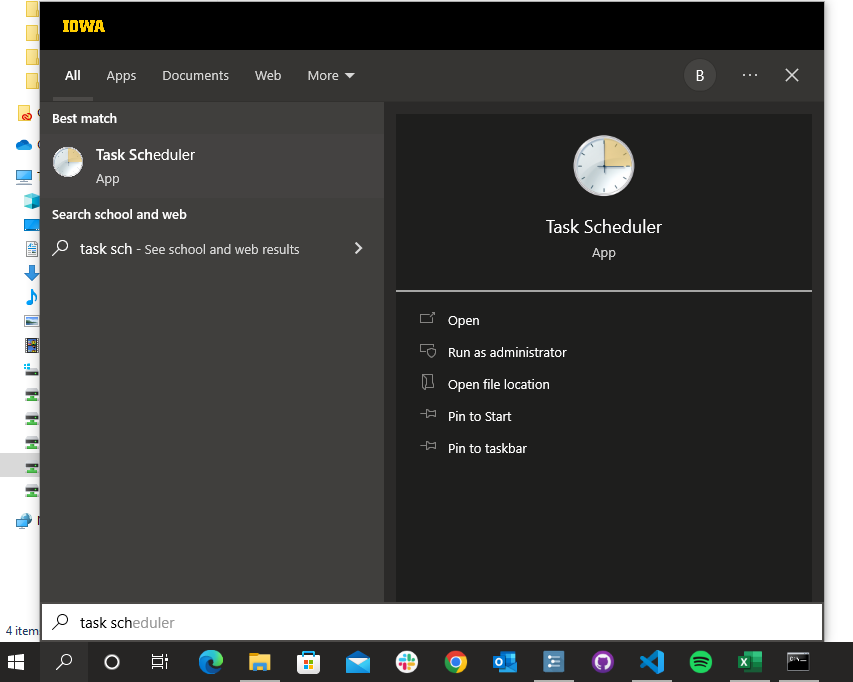

Code
update.packages(checkBuilt = TRUE)“
Rwill always be arcane to those who do not make a serious effort to learn it. It is not meant to be intuitive and easy for casual users to just plunge into. It is far too complex and powerful for that. But the rewards are great for serious data analysts who put in the effort.”
— Berton Gunter R-help August 2007 (archived at https://perma.cc/KY9N-2FTT)
“Evelyn Hall: I would like to know how (if) I can extract some of the information from the summary of my nlme.
Simon Blomberg: This is
R. There is no if. Only how.”
— Evelyn Hall and Simon ‘Yoda’ Blomberg, R-help April 2005 (archived at https://perma.cc/KY9N-2FTT)
R
Here are a slew of resources for learning base R (in addition to the documents in the lab’s Primer Articles folder):
R for Data Science book: https://r4ds.hadley.nz
r4ds.tutorials package: https://ppbds.github.io/r4ds.tutorials/
R: https://www.statmethods.net (archived at https://perma.cc/SPQ2-DJKM)
R
Codeacademy has free online courses:
R: https://www.sharpsightlabs.com/blog/are-you-fluent-r/ (archived at https://perma.cc/RWL5-GTWV)R skills: https://www.pluralsight.com/search?q=R (archived at https://perma.cc/U4ZZ-UE4X)Cookbook for R to find solutions to common tasks and problems: http://www.cookbook-r.com (archived at https://perma.cc/5ERJ-VRFR)R Graph Gallery to find examples of various graphs: https://r-graph-gallery.com
Coursera courses on R: https://pairach.com/2012/12/22/learn-to-use-r-for-free-with-coursera/ (archived at https://perma.cc/XJ5U-5E4W)R: https://www.r-bloggers.com/moocs-and-courses-to-learn-r/ (archived at https://perma.cc/MQ25-E3ME)Coursera: https://blog.revolutionanalytics.com/2012/12/coursera-videos.html (archived at https://perma.cc/6FU4-PAQW)RStudio Webinars: https://www.rstudio.com/resources/webinars/ (archived at https://perma.cc/6RNR-98JB)R course: https://www.datacamp.com/courses/free-introduction-to-r (archived at https://perma.cc/6ZM9-37L9)R in a Kinder, Gentler, More Effective Manner: https://github.com/matloff/TidyverseSkeptic (archived at https://perma.cc/QU9F-FBS8)R interactively with swirl: https://swirlstats.com (archived at https://perma.cc/TT9V-U663)learnr package: https://blog.rstudio.com/2017/07/11/introducing-learnr/ (archived at https://perma.cc/XGJ8-EXSN)R-bloggers: https://www.r-bloggers.com (archived at https://perma.cc/EL3X-ZXBB)R)The following are resources for learning statistics using R.
R for Data Science: https://r4ds.hadley.nz
Codeacademy has free online courses:
R: https://learningstatisticswithr.com (archived at https://perma.cc/SY87-5GCX)R: https://www.amazon.com/Discovering-Statistics-Using-Andy-Field/dp/1446200469 (archived at https://perma.cc/9LGU-7ZME)R/statistics through the lens of fantasy football: https://isaactpetersen.github.io/Fantasy-Football-Analytics-Textbook
tidyverse
The following are resources for learning tidyverse, which is a collection of R packages for data management:
If you have R questions, you can ask them in a number of places:
Posit: https://forum.posit.co
StackOverflow: https://stackoverflow.com/questions/tagged/r
Reddit: https://www.reddit.com/r/rstats/
R mailing list: https://stat.ethz.ch/mailman/listinfo/r-help
The following article provides additional resources and good guidance: https://www.r-bloggers.com/where-to-get-help-with-your-r-question/ (archived at https://perma.cc/4RRE-KL33).
When posting a question on forums or mailing lists, keep a few things in mind:
R is free software. People are offering their free time to help. They are under no obligation to help you. If you are disrespectful or act like they owe you anything, you will rub people the wrong way and will be less likely to get help.R: https://stackoverflow.com/a/5963610 (archived at https://perma.cc/PC9L-DQZG). Provide a reprex whenever possible: https://reprex.tidyverse.org.Note: many of these initial setup steps described below are not necessary for general use; many of these steps are necessary only for using lab-related repositories (e.g., to gain API access to export data from REDCap, to use absolute paths rather than relative paths so repos can communicate with each other, etc.).
R (https://www.r-project.org) into a directory that contains no spaces; On PC, change the location from the default C:/Program Files/R/[R-VERSION] (which contains a space) to C:/R/[R-VERSION] (which does not contain any spaces; archived at https://perma.cc/6VMX-3LYX—this is because some packages that require compilation to install cannot read filepaths with spaces; archived at https://perma.cc/XA3V-JTPY); may have to right click and “Run As Administrator”
R was already installed in a directory that contains spaces (e.g., C:/Program Files/R/[R-VERSION]), uninstall R before installing it in a directory that doesn’t contain spacesR (you may have to right click and “Run As Administrator”):
RStudio Desktop (https://www.rstudio.com/products/rstudio/download/)Positron (https://positron.posit.co)R and RStudio/Positron to always run with administrator permissions.
R (C:/R/[R-VERSION]/bin/R.exe) and RStudio (C:/Program Files/RStudio/bin/RStudio.exe). Right-click it to open the contextual menu. Then, click or tap on “Properties”. In the Properties window, go to the Compatibility tab. At the bottom of the window, check the box next to the “Run this program as an administrator” option, and then click or tap on Apply or OK.R packages so you can install packages from source, if necessary (i.e., if package binaries are not available):
git, GitLab, and the GitHub Desktop App in the main program files directory; may have to right click and “Run As Administrator”; For instructions setting up and using GitLab, see here: https://devpsylab.github.io/DataAnalysis/git.html#toBegin
Rprofile.site file in the etc folder of the R installation directory is the code that is run for every user at the beginning each time you load R. We will update the default Rprofile.site file with the lab’s Rprofile.site file so R installs packages in the correct location, sets the default package repository, updates packages, and gives you a fortune cookie. To do this, perform the following steps:
Rprofile.site file in the R installation directory (C:/R/R-[InsertVersionNumber]/etc/Rprofile.site) to be Rprofile_BACKUP.site
Rprofile.site file located in this repository at the following location (https://research-git.uiowa.edu/PetersenLab/R-InitialSetup/-/blob/master/R%20Setup%20Files/Rprofile.site), and paste it into the R installation directory
C:/R/R-[InsertVersionNumber]/etc/Rprofile.site
/Library/Frameworks/R.framework/Versions/[InsertVersionNumber]/Resources/etc/Rprofile.site
.Rprofile file in the user’s Documents folder is the code that is run for the particular user at the beginning each time you load R. We will update the default .Rprofile file (if there is one) with the lab’s .Rprofile file so R knows which computer you are using and which path to use (relative to where your R projects are located). To do this, perform the following steps:
.Rprofile template file in this repository at the following location, and make sure to remove anything besides .Rprofile in the filename: https://research-git.uiowa.edu/PetersenLab/R-InitialSetup/-/blob/master/R%20Setup%20Files/.Rprofile
.Rprofile file, and revise it with your HawkID.Rprofile file with the local path to the Documents folder for each of the computers you will use to access R (e.g., home computer, work computer, laptop). Make sure to use forward slashes (/), not back slashes (\) in the path.HOME directory. To find the HOME directory, open R and type the following command: Sys.getenv("HOME")—the output of the command is the location of your HOME directory; If this is a lab computer, it may be located here: //home.iowa.uiowa.edu/[user]/Documents. If this is your personal computer, it may be located here: PC: C:/Users/[user]/Documents; Mac: /Users/[user]. Then close R.HOME directory is in a OneDrive folder (or another cloud-based sync folder), you will want to change the directory of your HOME path so that it is not in a OneDrive folder. To do that, open Environment Variables (archived at https://perma.cc/A2E5-B5VA) in Windows. Then, add/edit HOME as the “variable name” with the intended location as the “variable value” (e.g., C:/Users/[user]/Documents, where you replace “user” with your HawkID).
Rprofile.site from the previous step
Sys.setenv("HOME" = "C:/Users/[specific user ID])/Documents").Rprofile file to the HOME directory and overwrite the original .Rprofile file (if it exists). You may have to show hidden files in order to see the file (PC: see Windows Explorer settings; Mac: Command+Shift+Dot)..Rprofile (not .Rprofile.Rprofile). Make sure there is a period at the beginning of the filename.RStudio/Positron. If the Rprofile.site and .Rprofile files are correctly set up, they should pre-populate your path location when you open R. If the contents of the Global Environment in RStudio are empty, your Rprofile.site and/or .Rprofile files are not set up correctly.
Error: could not find function "install.packages"), run the following line manually and then restart RStudio after the package finishes installing: install.packages("fortunes")
R/RStudio/Positron from saving your workspaces automatically using the following steps:
Tools → Global Options from the menus.Save workspace to .RData on exit to Never.OK.petersenlab R package using the following steps:
remotes package using the following command: install.packages("remotes")
petersenlab package using the following command: remotes::install_github("DevPsyLab/petersenlab")
ipconfig and press EnterIPv4 Address corresponds to your public IPEncrypt REDCap Token.R script: https://research-git.uiowa.edu/petersenlab/R-InitialSetup/blob/master/REDCap%20Credentials/Encrypt%20REDCap%20Token.R
REDCap Encryption Key.RData) was saved where you intended it to be saved on your local computer//lc-rs-store24.hpc.uiowa.edu/lss_itpetersen/Lab/Studies/School Readiness Study/Data Management/REDCap/Tokens/
REDCap Encryption Key.RData) to the comparable location of any other computers you own that you plan to access the data from
path variable you set in Rprofile.site) of every computer in order for it to be found by the Export Data.R script. The default location is: file.path(path, "GitHub/R/Data/REDCap Encryption Key.RData"), so if path is set as "C:/User/YourName", the file would be saved in: C:/User/YourName/GitHub/R/Data/REDCap Encryption Key.RData. The recommended location for GitHub repos is to create a folder titled GitHub in your Documents folder, and to put repos in the GitHub folder; it is NOT recommended to put git repos in a OneDrive folder because git files tend not to play nice with syncing services (archived at https://perma.cc/XZ6F-43G3; e.g., OneDrive, Dropbox)GitHub Desktop App (//lc-rs-store24.hpc.uiowa.edu/lss_itpetersen/Lab/Studies/School Readiness Study/Data Processing)
RStudio/Positron by using “Run as Administrator” (always open it as an administrator so it has write access to the program files directory);Export Data.R script in R: https://research-git.uiowa.edu/petersenlab/srs/SRS-DataProcessing/blob/master/1.%20Export%20Data/Export%20Data.R \\lc-rs-store24.hpc.uiowa.edu\lss_itpetersen\Lab\Studies\School Readiness Study\Data Processing\1. Export Data\Export Data.R
RStudio/Positron, change the Graphics backend to Cairo: Tools → Global Options → Graphics
The petersenlab package is here: https://devpsylab.github.io/petersenlab. To install the petersenlab package, see instructions here.
To install and load R packages, see the instructions here.
To update packages, use the following code:
update.packages(checkBuilt = TRUE)One indication that the packages might not be updating to the latest version is seeing the same packages showing as needing an update after having run the update.packages() function. If this does not update the package(s) to the latest version, you may need to install the latest version of the package(s) from source (see the section on “Initial Set Up” of R for the software needed to install R packages from source):
update.packages(checkBuilt = TRUE, type = "source")renv
The renv package allows you to create separate environments for each project you are working on. These environments are analogous to containers in that they contain all of the necessary scripts and packages to recreate a given project. However, unlike containers, environments created using renv are specific to R.
renv Documentation: https://rstudio.github.io/renv/index.html
Create a directory where you want you want to store the project.
Start R
Load the renv package:
When prompted, initialize a renv project:
renv::init(project = "/path/to/project/directory/")Set your working directory to the project directory:
setwd("/path/to/project/directory/")Restart your R session
From this point on you are working in a renv project. Installed packages will go into a library within this project. After initializing the renv project on the local repository of R packages, packages from the local repository can be installed with renv::install():
renv::install("package_name")To restart a renv project, simply start R from the directory created in step (1). The project will initialize automatically.
To update version of renv: renv::upgrade()
To install packages: renv::install("package_name")
To update packages: renv::update()
To save the current state of your library: renv::snapshot()
To restore the state of your library from the lock file: renv::restore()
To disable renv on a project: renv::deactivate()
renv using a DESCRIPTION fileIf you want to control which packages are installed in a renv project, you can use a DESCRIPTION file to specify the packages that should be installed:
Create a DESCRIPTION file in the project directory with the following format:
Type: project
Description: My project.
Depends:
packageName1,
packageName2,
packageName3Run renv::settings$snapshot.type("explicit") to suppress dependency discover and to enable “explicit” mode: https://rstudio.github.io/renv/reference/dependencies.html#explicit-dependencies
Run renv::init(bare=TRUE) to initialize the project without attempting to discover and install R package dependencies
renv has been initializedR environment module (see Install R packages section above)R projectRpackage_name):
install.packages("package_name", repos = "http://cran.r-project.org", type = "source", dependencies = TRUE, Ncpus = 40)install.packages(c("renv","psych","tidyverse","data.table","nlme","lme4","mirt","TeachingDemos","Amelia","mice","miceadds","abind","future","lavaan","blavaan","Rcpp","igraph","shinystan","StanHeaders","brms","rstan","rjags","renv"), repos = "http://cran.r-project.org", type = "source", dependencies = TRUE, Ncpus = 40)renv::snapshot()R
Instructions adapted from: https://mirror.las.iastate.edu/CRAN/bin/windows/base/rw-FAQ.html#What_0027s-the-best-way-to-upgrade_003f (archived at https://perma.cc/W5QW-MA6Q)
R
R version into a directory that contains no spaces (see Step 2 in the Initial Set Up section above)Rprofile.site file, as described above, which installs packages to the common/shared “Packages” folder]:
R version folder, copy the current Rprofile.site file as a backup (Rprofile_BACKUP.site) and overwrite the original file with the lab’s version of Rprofile.site from here: https://research-git.uiowa.edu/PetersenLab/R-InitialSetup/-/blob/master/R%20Setup%20Files/Rprofile.site
R will run the file named Rprofile.site at initial runtime.R and RStudio to always run with administrator permissions.
R (C:\R\R-VERSION\bin\R.exe) and RStudio (C:\Program Files\RStudio\bin\RStudio.exe). Right-click it to open the contextual menu. Then, click or tap on “Properties”. In the Properties window, go to the Compatibility tab. At the bottom of the window, check the box next to the “Run this program as an administrator” option, and then click or tap on Apply or OK.R Compiler Tools for Rcpp on MacOS; see the instructions in the section on initial set up)R version and run update.packages(checkBuilt = TRUE, ask = FALSE), and install any necessary packagesRStudio Project
For each data analysis project (i.e., each GitLab/GitHub repo), create an RStudio Project. This helps keep your project files organized.
R/Quarto Notebooks for “Computational Notebooks”Using R/Quarto Notebooks for “Computational Notebooks” is helpful for reproducible code that can be shared with others. To create computational notebooks see the Markdown section on computational notebooks in the Data Analysis guides.
R scripts, use sections.
# Section Header Title ####)RStudio, use CTRL-Shift-R or “Code” - “Insert Section”R Notebooks/Markdown, use Headers and code chunks.
# Section Header Title)Ctrl+Alt+I; or click “Insert” button then “R”cbcl_ for the Child Behavior Checklist variablesprefix_thisIsTheVariableName
Specify the package for any function that is not included in base R. For example, when using the describe() function, are you using the describe() function from the psych package or from the Hmisc package? It is helpful to specify the package for a given function so that a) it is clear which package is being used and b) any package conflicts are resolved in the you you intend. To specify the package for a function, follow the following structure: package::function(). For instance, to use the describe() function from the psych package, write: psych::describe().
When sourcing R scripts and reading/saving files, make sure to specify relative filepaths that are reproducible on other machines and by other people. For instance, the following is NOT a filepath that is reproducible by others: C:\Users\Isaac\Desktop\data.csv. To specify a filepath that is reproducible by others, specify the filepath relative to a base path. The base path may be a path to the project folder on your computer, or it may be the path to the lab drive.
Here is an example of using a filepath that with the base path on your computer (the path variable is set by your .Rprofile file, as set up here):
library("petersenlab")
mydata <- read.csv(
file = file.path(path, "/GitHub/SRS-CBCL-Modeling/Data/cbcl.rdata",
fsep = ""))Here is an example of using a filepath with the base path on the lab drive:
library("petersenlab")
petersenLabPath <- petersenlab::setLabPath()
mydata <- read.csv(
file = file.path(petersenLabPath, "/Lab/Studies/School Readiness Study/Data/data.csv",
fsep = ""))It is important to comment code frequently and clearly. You want you (and others) to easily be able to understand your code if you come back to it several years later!
For reproducibility purposes, it is important not to save your workspace image (archived at https://perma.cc/9SCZ-L4DE). It is best practices to begin R each session with a clean workspace. If there is a .Rdata file in the same folder as the Rstudio Project, Rstudio will automatically load the objects into the workspace at the beginning of the session. This is problematic because those objects can interact/interfere with the code and can lead to problems with replicability for others who are running the code without those objects in the workspace. When you exit RStudio, RStudio asks if you want to “Save workspace image to [filepath]/.Rdata?” Make sure to select “Don’t Save”! However, do make sure to save your R scripts before exiting Rstudio.
R Markdown
https://www.spsanderson.com/steveondata/posts/2023-06-29/index.html (archived at https://perma.cc/9EXK-W99Y)
R scripts can be run automatically. For example, it can be helpful to have an R markdown report run automatically before the day begins.
Notepad app and create a file with the following syntax.
Location of R executable file\R CMD BATCH "Path location of script that should be automatically run"C:\R\4.1.3\bin\R CMD BATCH "R:\Lab\Studies\School Readiness Study\Data Processing\5. Reports\automatic_reports\Run_Reports_auto.R".bat file in the desired location.bat file has been created, search Task Scheduler in the search bar 
Actions selection bar, select Create basic Task...
Start a program
Program/script browse to the .bat file that was created in step 1 and select Next
Finish and the script is now configured to run automaticallyConditions of the task to ensure that the computer “wakes up” to execute the script
Conditions from the tabs across the top of the task windowWake the computer to run this task
R is updated, the path to the bin folder within R needs to be updated to reflect an accurate absolute path to R.
C:\R\4.1.3\bin\R CMD BATCH changed to C:\R\4.3.0\bin\R CMD BATCH
This error may appear if you are attempting to render a markdown file
pandoc version 1.12.3 or higher is required and was not found.The solution to this problem can be found at this link (archived at https://perma.cc/YX57-BPRS)
When using R to perform such actions as rendering sites and processing data, it can be useful to include code that commits and pushes relevant changes into the appropriate git repository. The steps below assume that you have Git and the GitHub desktop app installed. The instructions to download and configure git software can be found here
Install and/or load git2r package
install.packages("git2r")
library(git2r)Specify the path to your repository
repoPath <- "C:/Users/username/Documents/GitHub/exampleRepo"Open and define the repository
repo <- repository(repoPath)Stage changes to be committed
Stage all files in repo: r add(repo, "*")
Stage files with a specific file extension: r add(repo, "*.txt")
Stage files with one of any specified file extension: r add(repo, c("*.txt", "*.csv", "*.html"))
Stage files within a specific folder: r add(repo, "/folderName/*)
Stage one specific file: r add(repo, "fileName.txt)
Stage multiple specific files: r add(repo, c("thisFile.txt", "thatFile.txt", "anotherFile.txt"))
Commit the changes
Commit with a customized commit message: r commit(repo, "My commit message")
Commit with a generated message using system or environment variables:
# example: include system date in commit message
date <- format(Sys.Date(), format = %Y-%m-%d)
message <- paste(date, "daily site update", sep = " ")
commit(repo, message)Push changes
push(repo)Note: The code included above will prompt Git to authenticate your credentials by manually providing your username and password in a popup window. The push() function accepts a credentials = cred_user_pass("username", "password") argument that will “bypass” the need for user input by including the relevant credentials in the push() function call. One could provide their username and password directly in the script running this function, but other more-secure options include:
See here for an example of encryption and key creation
Using the encrypted credential and encryption key:
# Define key location
encryptionKeyLocation <- "path/to/key/location/myKey.RData"
# Load key into environment
load(encryptionKeyLocation)
# Read encrypted credential file using key
creds <- read.aes("path/to/encrypted/credentials/file.txt", key = key)
# Extract password from credential data
myPassword <- creds$password
# Push changes to git using credentials
push(repo, credentials = cred_user_pass("insertUsername", myPassword))try() Statementstry() statements can be very useful in cases where you would like code to continue running even if a certain line errors out. If the code inside of the statement results in an error, the try() statement will allow R to simply jump to the next line of code, rather than halting the entire process.
It is best practice to ensure that the smallest possible “unit” of code is wrapped in the try() statement rather than a large section. This is because the try() statement will treat everything within it as a “single” operation. Thus, an error ocurring early in the sequence within a try() statement will cause the remainder of the sequence to be skipped, and R will skip to the next line of code outside of the present try() statement.
For example:
The following code does NOT have try() statements around the smallest possible unit. If file_b.R were to error out, file_c.R would not run. In other words, file_c.R would be skipped because it occurs after file_b.R in the same try() statement.
On the other hand, the revised code below IS using try() statements around the smallest possible unit. If file_b.R were to error out, file_c.R would then begin to run. This is because each individual file being “sourced” is wrapped in its own try() statement.
A helpful post can be found here:
https://stackoverflow.com/questions/35852722/how-do-you-read-a-password-protected-excel-file-into-r (archived at https://perma.cc/U32Z-22VE)
install.packages("excel.link")
library("excel.link")
passwordProtectedBook <- excel.link::xl.read.file(
file.path("full path to workbook"), #Full path to workbook
password = "pass", #password
write.res.password="pass") #writing the reset passwordR
Occasionally, it can be helpful to send a Slack message using R. For example, if a script does not run, a Slack message can be sent to inform the appropriate team members. These instructions (archived at https://perma.cc/9CWJ-J5ZT) can largely be followed to set up R to send Slack messages. However, there are some differences:
token category.
Oauth & Permissions
token: YOUR_FULL_API_TOKEN
channel: #general
username: slackr
incoming_webhook_url: https://hooks.slack.com/services/XXXXX/XXXXX/XXXXXOnce the configuration is complete, it is possible to send messages. For now, we have found it helpful to embed the slacks in the tryCatch function.
tryCatch(
CODE YOU WANT TO RUN,
error = function(e)
{
#message to send if the code doesn't run
my_message <- paste( "example message")
slackr::slackr_msg(my_message, channel = "#recruitment")
})It is also possible to slack specific users with instructions found at this link (archived at https://perma.cc/59U5-V4GQ).
//n with a spaceMany notes in projects that are exported from REDCap come with spaces (or new lines) denoted as //n. Use the below code to make these fields more readable in the future.
gsub('\\n', ', ', df$notesField)R on a Network DriveWhen working with R on a network drive, it may be helpful to configure the project to store .Rproj.user on the local C:/ drive rather than on the network drive, which results in slow execution times.
For more info:
renv for Package Managementrenv is used for reproducibility, by helping with package management (tracking package versions, etc.):
https://rstudio.github.io/renv/articles/renv.html
Before updating a package locally, make sure that it is available in the Posit Package Manager (so it can be available to GitHub Actions):
https://packagemanager.posit.co
To update the package, run the following in R:
# 1. Update packages in package environment
renv::upgrade()
renv::update()
renv::snapshot()
# 2. Add/edit code
# 3. Update documentation
roxygen2::roxygenise()
# 4. Update package version (or can do this manually)
usethis::use_version()
# 5. Generate the PDF version of the manual and place it in the `/man/figures/` folder of the package:
#devtools::build_manual(path = "./man/figures/manual.pdf")Generate the PDF version of the manual and place it in the /man/figures/ folder of the package using the following code in the terminal (similar to devtools::build_manual(path = "./man/figures/"), but can name the file manual.pdf):
cd ./petersenlab
R.exe CMD Rd2pdf . --output=man/figures/manual.pdf --force --no-preview --no-cleanEither manually or using the terminal, delete the created folder whose name begins with “.Rd2pdf…”—e.g.:
rm .Rd2pdf39632 -Recurse -Force# 7. Then, build the package: Ctrl-Shift-B
devtools::build()
# 8. Then, check the package: Ctrl-Shift-E
devtools::check()Then, run R CMD check
Then, install the package:
renv::install("C:/R/Packages/petersenlab") #PC
renv::install("/Library/Frameworks/R.framework/Packages/petersenlab") #MacTo install new packages in the package environment, run the following in R:
renv::install("NAME_OF_PACKAGE")or:
install.packages("NAME_OF_PACKAGE")R CMD check
.tar.gz file)
R console:devtools::build() # or: devtools::build(pkg = "E:/Documents/GitHub/petersenlab")Open terminal in RStudio/Positron
.tar.gz file) is built, open a terminal window directly in RStudio by clicking on the “Terminal” tab at the bottom of RStudioRun R CMD check --as-cran
.tar.gz file) is located (commonly up one directory):cd ..Then, run R.exe CMD check --as-cran followed by the name of your package tarball (making sure to update the package version in the filename). For example:
R.exe CMD check --as-cran petersenlab_1.0.0.tar.gzIn the terminal:
cd ./petersenlab
R.exe CMD Rd2pdf . --output=man/figures/manual.pdf --force --no-preview --no-cleanThen, delete the created folder whose name begins with “.Rd2pdf…”
In the R Console, build the source package in R (or using the instructions described above):
devtools::build(pkg = "D:/Documents/GitHub/petersenlab")In the terminal (making sure to update the package version in the filename):
cd ..
R CMD check --as-cran petersenlab_1.0.0.tar.gzno visible binding for global variable; Undefined global functions or variables
For example:
no visible binding for global variable
'moderatorVal_centered'
Undefined global functions or variables:
moderatorVal_centered predictorVal_centeredSolution: set each variable to NULL in the package function before it is mentioned. For example:
predictorVal_centered <- moderatorVal_centered <- NULLR CMD check via GitHub Actionsusethis::use_github_action("check-standard")Install Package: ‘Ctrl + Shift + B’
Check Package: ‘Ctrl + Shift + E’
Test Package: ‘Ctrl + Shift + T’
renv::install("C:/R/Packages/petersenlab")
renv::snapshot()
renv::install()pkgdown
Run once to configure your package to use pkgdown:
usethis::use_pkgdown()Then use pkgdown to build your website:
pkgdown::build_site().R file with the function_pkgdown.yml filerenv::upgrade()renv::update()renv::snapshot()roxygen2::roxygenise()R CMD checkdevtools::build(pkg = "D:/Documents/GitHub/petersenlab/inst/extdata/testpackage1")
devtools::build(pkg = "D:/Documents/GitHub/petersenlab/inst/extdata/testpackage2")
install.packages("D:/Documents/GitHub/petersenlab/inst/extdata/testpackage1_0.1.0.tar.gz", repos = NULL, source = TRUE)
install.packages("D:/Documents/GitHub/petersenlab/inst/extdata/testpackage2_0.1.0.tar.gz", repos = NULL, source = TRUE)
remotes::install_local("D:/Documents/GitHub/petersenlab/inst/extdata/testpackage2_0.1.0.tar.gz")
remotes::install_local("D:/Documents/GitHub/petersenlab/inst/extdata/testpackage2_0.1.0.tar.gz")Official documentation for CRAN:
Unofficial documentation:
To troubleshoot R issues, be resourceful. Try googling the error message or issue you are experiencing. See here for a list of places you can pose R-related questions for help. In addition, particular errors/warnings/issues are included below:
[object name] not found)
CTRL-F to search for it is a good way to check these thingsnon-numeric argument to binary operator indicate that the function you are trying to use is expecting to recieve numeric data as an input but one or more of the inputs are not numeric
class(data$variable) (replace “data” and “variable” with whatever you are trying to invesitgate) is useful for determining how R is interpreting your data. Often, data that look like numbers can end up being stored as a character (text) variable. This can be due to import/export processes or due to an issue with data entry.
00 is entered instead of 0 in a numeric field R is likely to interpret the variable as a character instead of a number when importing the datavariable.x or variable.y)variable.x instead of variable) or deal with the duplicated columns before/during the joining process (e.g., include duplicate columns in the by argument of joining function or remove the redundant column from one of the datasets to be joined)NA (missing) or NaN (not a number) values. Such values may not be an issue or error in all cases, but if you are not expecting that as a result of your computations, this might suggest an issue with the code and/or data structureCode can be wrapped in try() statements so that if an error occurs, the script will simply “skip” to the next line of code. These try() statements are particularly useful when rendering a site; if they are not used, a single error will halt the entire process. try() statements allow the code to continue running in spite of a line or two erroring out.
If you have already incorporated try() statements and are still experiencing fatal errors in code, check to make sure that the smallest possible “unit” of code is wrapped in try() statements, rather than large sections of code. See here for more information.
PACKAGENAME package in FILEPATH library will not be updatedThis warning might indicate that it cannot update the package because it is part of the base R installation. To fix this:
R installation in the library directory of the R installation (e.g., C:\R\R-4.3.1\library\PACKAGENAME\)C:\R\Packages\PACKAGENAME\); if it is, delete it from there as wellR and run install.packages("PACKAGENAME") to reinstall the packageR
R installation, move the installed package folder C:\R\Packages\PACKAGENAME\ to the library directory of the R installation (e.g., C:\R\R-4.3.1\library\PACKAGENAME\)packrat
Please note: we now use renv rather than packrat for package management
https://uiowa.atlassian.net/wiki/spaces/hpcdocs/pages/76514803/Adding+R+programs+to+a+personal+library (archived at https://perma.cc/3SRR-2JE7)
cd to the above directorypackrat package: library("packrat")
R prompt, initialize the packrat project on the local repository of R packages with: packrat::init(project = "/Users/itpetersen/Documents/Projects/INSERT_PROJECT_NAME/", options = list(local.repos = "/Users/itpetersen/R/x86_64-pc-linux-gnu-library/4.0"))
R session in the given project directory after running init in order for the changes to take effect!packrat project. Installed packages will go into a library within this project. After initializing the packrat project on the local repository of R packages, packages from the local repository can be installed with packrat::install_local():
packrat::install_local("package_name")R from the directory created in step (1). The project will initialize automatically.To save the current state of your library: packrat::snapshot(); if that command fails due to an error when fetching sources, try packrat::snapshot(snapshot.sources = FALSE)
To disable packrat on a project: disable(restart = FALSE)
packrat has been initializedR environment module (see Install R packages section above)R projectRpackage_name):
install.packages("package_name", repos = "http://cran.r-project.org", type = "source", dependencies = TRUE, Ncpus = 40)install.packages(c("packrat","psych","tidyverse","data.table","nlme","lme4","mirt","TeachingDemos","Amelia","mice","miceadds","abind","future","lavaan","blavaan","Rcpp","igraph","shinystan","StanHeaders","brms","rstan","rjags","renv"), repos = "http://cran.r-project.org", type = "source", dependencies = TRUE, Ncpus = 40)packrat::snapshot(); if that command fails due to an error when fetching sources, try packrat::snapshot(snapshot.sources = FALSE)
packrat environment on a compute node (only if necessary if package load fails due to issues building packages)This is relevant if building a packrat on Argon/HPC.
qlogin – for more info, see here: https://uiowa.atlassian.net/wiki/spaces/hpcdocs/pages/76513454/Qlogin+for+Interactive+Sessions (archived at https://perma.cc/Y3A9-WQ3W)module load stack/2020.2-base_arch – this will ensure that the modules point to the lowest common multiarchitecture on Argon and will run on all nodesmodule load rR projectRpackrat project (see above)packrat
exit – to exit the qlogin sessionNote: Your packrat environment will then be linked to the proper glpk library and will run on any Argon node. You do not need to use the 2020.2-base_arch module at run time, only build time.
R version 4.6.1 (2026-06-24)
Platform: x86_64-pc-linux-gnu
Running under: Ubuntu 24.04.5 LTS
Matrix products: default
BLAS: /usr/lib/x86_64-linux-gnu/openblas-pthread/libblas.so.3
LAPACK: /usr/lib/x86_64-linux-gnu/openblas-pthread/libopenblasp-r0.3.26.so; LAPACK version 3.12.0
locale:
[1] LC_CTYPE=C.UTF-8 LC_NUMERIC=C LC_TIME=C.UTF-8
[4] LC_COLLATE=C.UTF-8 LC_MONETARY=C.UTF-8 LC_MESSAGES=C.UTF-8
[7] LC_PAPER=C.UTF-8 LC_NAME=C LC_ADDRESS=C
[10] LC_TELEPHONE=C LC_MEASUREMENT=C.UTF-8 LC_IDENTIFICATION=C
time zone: UTC
tzcode source: system (glibc)
attached base packages:
[1] stats graphics grDevices utils datasets methods base
loaded via a namespace (and not attached):
[1] htmlwidgets_1.6.4 compiler_4.6.1 fastmap_1.2.0 cli_3.6.6
[5] tools_4.6.1 htmltools_0.5.9 otel_0.2.0 yaml_2.3.12
[9] rmarkdown_2.32 knitr_1.52 jsonlite_2.0.0 xfun_0.61
[13] digest_0.6.39 rlang_1.3.0 evaluate_1.0.5